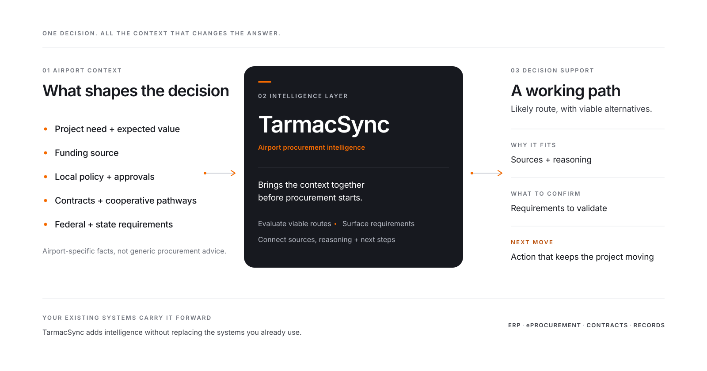

Know the path. Keep the airport project moving.
TarmacSync brings your airport's policy, funding context, project facts, and contract options together so your team can see the working path and what to do next.
Welcoming Founding Airport Partners · Free 90-day collaboration
Built by an Accredited Airport Executive.
Stop rebuilding the answer for every project.
The answer already exists across your purchasing policy, your grant assurances, the cooperative contracts you can already use, and whatever the last person to run this project remembered. TarmacSync brings those together before the solicitation goes out — so the route, the thresholds that apply, and the evidence you will need at closeout are settled up front.

TarmacSync works out the path. Your existing systems carry it forward.
From one request to a working path.
TarmacSync connects the request to the airport’s policy, funding, and project record—then surfaces the working path and the next action.
Route
Purchase type, dollar amount, and funding source decide the buying path. Cooperative, competitive bid, quotes, or an exception — with the thresholds that produced it.
Overlay
AIP, BIL, and PFC funding each carry different obligations. TarmacSync shows which apply to this purchase and which are still open questions.
File
The evidence checklist, forms to prepare, and closeout record assemble as you work, rather than being reconstructed afterwards.
Built on the documents that actually govern the decision.
1,244 sections — FAA Order 5100.38D, the AIP Handbook, indexed section by section
40 — Airport Sponsor Grant Assurances, April 2025 set
7,000+ — cooperative contracts across Sourcewell, OMNIA Partners, NASPO ValuePoint, TIPS-USA, and GSA
Every source dated — each carries a last-verified date, checked monthly against the official publication
TarmacSync retrieves regulatory text. It does not write it. The buying path is decided by a rules engine using your thresholds and funding facts; the language model explains the result and never authors a citation. If the answer is not in a source, TarmacSync says so.
Trust starts with showing the work.
See what shaped the path.
TarmacSync connects your airport's reviewed policies and project facts with official guidance and contract intelligence—so your team can trace what informed the working path.
Know what could change it.
Confirmed facts stay separate from working interpretations and open questions. If one missing answer could change the path, TarmacSync brings it forward.
Keep every decision with your team.
TarmacSync organizes the path, evidence, and next move. Procurement, legal, grant, board, and FAA/ADO decisions remain with the people responsible for them.

"The question was never what to buy. It was always how to buy it."
I built TarmacSync after watching airport teams search the same policies, funding terms, contracts, and project files whenever a new purchase or project came up. The goal is simple: help the team connect those pieces sooner and move forward with greater clarity.
Built for airports. Shaped with airports.
We're inviting U.S. airports to work directly with TarmacSync during a free 90-day collaboration beginning January 2027. Each airport will bring real projects. Together, we'll evaluate how TarmacSync fits the airport's workflow and use that experience to shape the first release. Airports reserving a place now are configured ahead of the start.
Use TarmacSync alongside your airport's existing process. We'll configure the workspace, work through real projects with your team, and compare TarmacSync's guidance with how your airport operates today.
What your airport receives
- A configured TarmacSync workspace for your airport
- Hands-on TarmacSync support for real projects
- Structured project records and supporting evidence
- Direct working sessions with the founder
- Direct input into first-release priorities
What participation involves
- One kickoff conversation
- Real airport projects
- Short check-ins during the 90-day program
- Candid feedback about the workflow and outputs
The program is open to all U.S. public-use airports. Expressing interest does not guarantee selection.
Tell us about your airport and one project you would like to explore. Omar will personally review your information and reply within two business days. Starting the conversation does not commit your airport to the program.
We'll use your information only to evaluate your interest and operate the Founding Airport Partner Program, as described in our Privacy Policy. We do not sell your information.
Questions you might have.
Who is the Founding Airport Partner Program for?
U.S. public-use airport teams and sponsors — especially GA, reliever, non-hub, and small-hub airports. The strongest fit is an airport with a real upcoming purchase or project and a willingness to provide candid feedback.
What does the 90-day collaboration include?
Each participating airport receives guided setup, a configured TarmacSync workspace, TarmacSync support across real airport projects, short check-ins during the 90-day program, and direct working sessions with the founder. There is no fee, automatic renewal, or purchase commitment.
What would our airport need to provide?
Your procurement policy, applicable purchasing thresholds, and background on real purchases or projects. Please do not provide SSI, CUI, classified, or protected security information.
Does participation require a public endorsement?
No. Participation may remain private. TarmacSync will not use the airport's name, logo, testimonial, or project information publicly without written permission.
Does TarmacSync replace our existing systems or reviews?
No. TarmacSync helps the airport understand the working path, supporting evidence, open questions, and next action. Existing procurement, legal, grant, board, FAA, ERP, eProcurement, and records processes remain in place.
How is airport information handled?
Airport information is not used to train public AI models. Approved providers may process information only to operate the service under disclosed terms. Additional data-handling expectations will be documented before an airport provides program materials.
What does "Founding Airport Partner" mean?
"Founding Airport Partner" describes participation in TarmacSync's initial airport program. It does not create an ownership, equity, agency, joint-venture, endorsement, or intellectual-property relationship.
What does TarmacSync cost after the 90 days?
TarmacSync is priced per airport, not per user, starting at $2,400 per year for general aviation airports and scaling by airport size. The first cohort begins January 2027 and is limited by how many airports we can configure personally before the start — reserve by November 30, 2026. Nothing converts automatically — at the end of the 90 days you decide whether to continue. Full tiers and how airports typically purchase are on our pricing page.
Bring one project. We will show you the path.
Reserve a place in the January 2027 cohort and tell us the first project you want to work through together.
Start the conversation